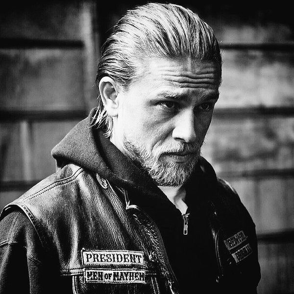
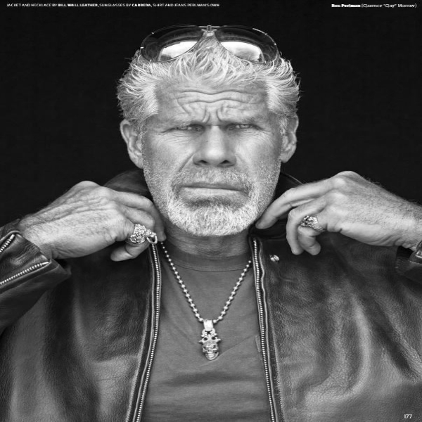
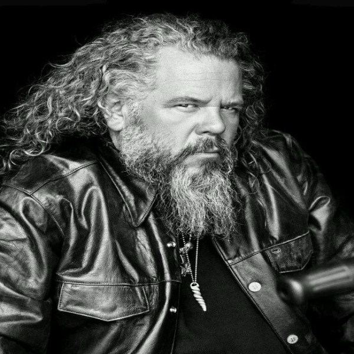
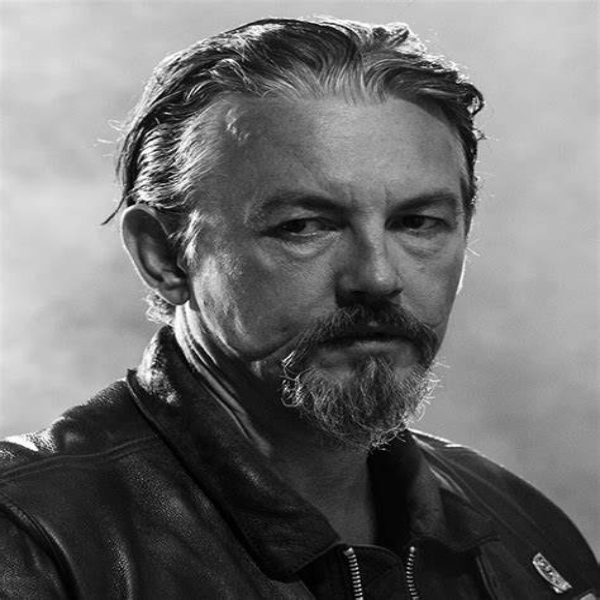
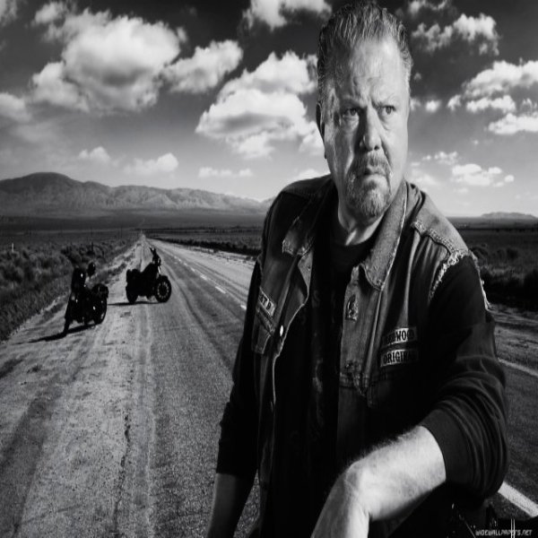
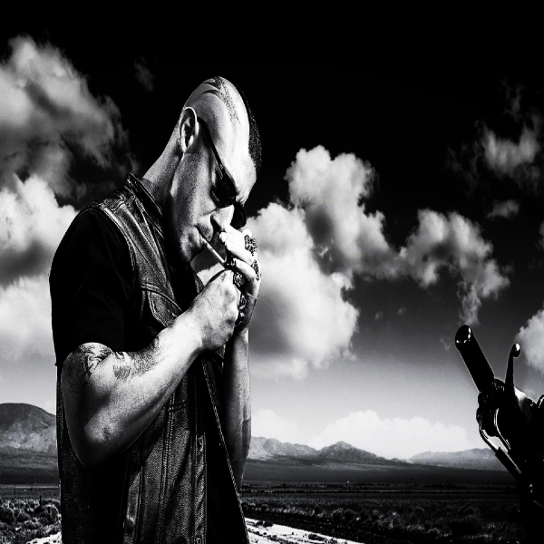
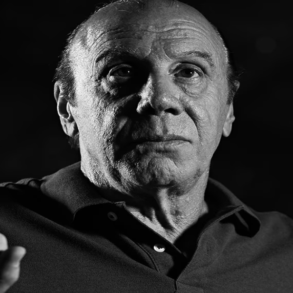

Jax Teller
Jackson Nathaniel "Jax" Teller es el protagonista de la serie. Miembro del club de motociclistas Sons of Anarchy, con sede en la ciudad ficticia de Charming, California. Hijo de uno de los miembros fundadores del club, John Teller, su conflicto entre querer mantener la longevidad de la organización de su padre reduciendo el elemento criminal y su deseo de convertirse en un hombre de familia respetuoso de la ley a pesar de los crecientes niveles de violencia forma el conflicto central de la serie.
Gemma Teller Morrow
Gemma es la viuda de John Teller , miembro fundador del Sons of Anarchy Motorcycle Club Redwood Original (SAMCRO). Al comienzo de la serie, ella es la matriarca del club y esposa del presidente del club Clay Morrow y madre del vicepresidente Jax Teller. Ella no se disculpa por los extremos a los que llegará para proteger al club y es querida por todos sus miembros. A lo largo de la serie, sin embargo, tiene una relación tumultuosa con su nuera Tara Knowles , lo que afecta continuamente su relación con Jax.

Clay Morrow
Clarence "Clay" Morrow es uno de los miembros originales de los "First 9" del Sons of Anarchy Motorcycle Club Redwood Original (SAMCRO), pero no es un miembro fundador. Es el expresidente internacional del Sons of Anarchy Motorcycle Club. durante la cuarta temporada, Clay involucra al club en el contrabando de drogas con el cartel para su propia protección, vacilando en su lealtad y gradualmente revela ser uno de los antagonistas de la historia.
Tara Knowles
La Dra. Tara Grace Knowles-Teller es originaria de Charming, California. Tara fue la novia de la secundaria de Jax Teller. Tara fue arrestada en compañía de Jax al menos tres veces en 1996. Se fue de la ciudad cuando Jax tenía 19 años, para alejarse de la vida de pueblo pequeño y de la influencia del club. Luego de 10 años vuelve a Charming.
Opie Winston
Harry "Opie" Winston es miembro del Sons of Anarchy Motorcycle Club, Redwood Original (SAMCRO) e hijo del fundador Piney y mejor amigo de Jax desde la infancia. Opie nació en Charming, California, en 1978, hijo de Piney y Mary Winston. Mary se lo llevó cuando tenía dieciséis años, pero regresó rápidamente a Charming y se convirtió en miembro de SAMCRO en 1995. Se casó con su esposa, Donna, y juntos tuvieron dos hijos, Ellie y Kenny.

Bobby Munson
Robert "Bobby Elvis" Munson es el secretario de tesorería de SAMCRO. Esto significa que es responsable de todos los asuntos financieros y el mantenimiento de registros del club. Bobby es inteligente y de carácter equilibrado (un rasgo poco común entre sus compañeros), pero no tiene miedo de usar la violencia cuando es necesario. Es judío y hace imitaciones de Elvis Presley en Lake Tahoe , lo que lleva a que a veces se refieran a él como "Bobby Elvis". Como uno de los miembros más tranquilos, con frecuencia se encuentra teniendo que tratar de calmar las tensiones entre sus hermanos.

Tig Trager
Alexander 'Tig' Trager es el sargento de armas del club de motociclistas Sons of Anarchy en Charming, California , y es el miembro más violento del club. Es extremadamente leal a Clay Morrow , el presidente del club, a la esposa de Clay, Gemma , y al club en sí. A veces ha tenido una relación tensa con el vicepresidente Jax Teller, que surge del uso de la violencia por parte de Trager en situaciones que pueden no requerirla.

Chibs Telford
Filip 'Chibs' Telford, nació en Escocia y creció en Belfast, Irlanda del Norte. Es un ex miembro del IRA Real y de la carta de Belfast de Sons of Anarchy, también conocida como SAMBEL. Chibs es extremadamente leal a Jax Teller y al club; también tiene una buena relación con Tig Trager, Half-Sack Epps (un prospecto que patrocinó) y Juice Ortiz, con quien tiene una relación paternal.

Piney Winston
Piermont 'Piney' Winston fue cofundador de SAMCRO y fue el primer vicepresidente del club. Es el padre de Opie , fue un veterano de Vietnam y debe llevar un tanque de oxígeno debido a un enfisema. cofundó el Club de Motociclistas Sons of Anarchy con su compañero veterano de guerra John Teller como una forma de rebelión social y libertad.

Juice Ortiz
Juan Carlos "Juice" Ortiz es el hacker y oficial de inteligencia de SAMCRO . Aunque Juice muestra una gran destreza técnica en algunos aspectos, también ha demostrado ser algo simple en lo que respecta a otras tareas, lo que a menudo le ha valido novatadas de los otros miembros. El patrocinador de Ortiz fue Jax Teller. Clay Morrow lo consideraba poco confiable y a menudo se le asignaban tareas menores, como conducir el camión de transporte. Es un miembro joven y relativamente nuevo de SAMCRO; es cercano a Chibs Telford y Tig Trager.

Wayne Unser
El jefe Wayne Unser es el jefe del Departamento de Policía de Charming. También es dueño de la empresa de transporte Unser Shipping y no tiene reparos en utilizar la SOA para su protección y otras actividades cuestionables relacionadas con su negocio. Es aliado de Clay Morrow y veterano de la Infantería de Marina de los Estados Unidos de la Guerra de Vietnam. A pesar de ser el jefe de policía, los lazos de Unser con SAMCRO se estrechan a lo largo de la serie.